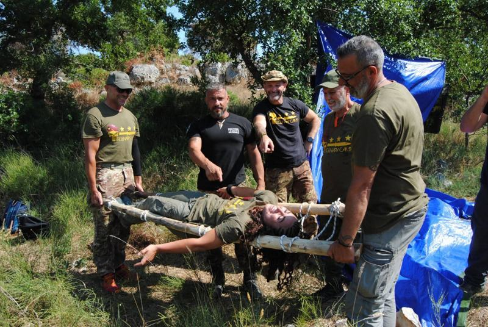

01
Primo soccorso e BLSD
- Basic Life Support and Defibrillation: formazione su come eseguire la rianimazione cardiopolmonare e l'uso del defibrillatore in situazioni di emergenza.
- Tecniche di disostruzione delle vie aeree.